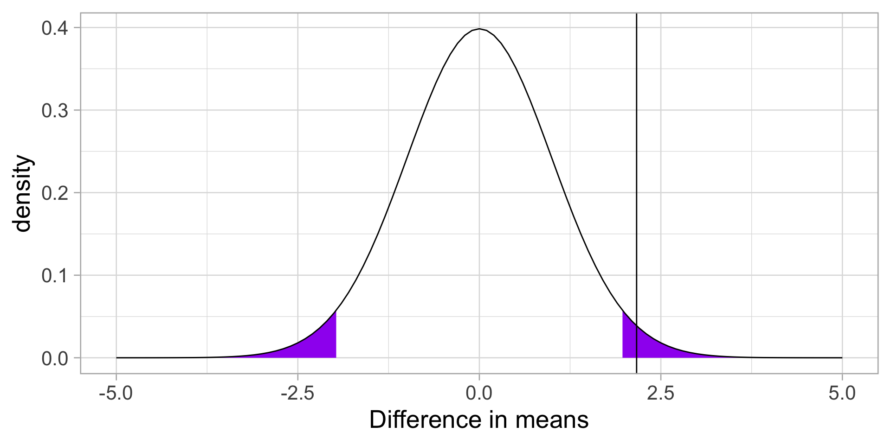
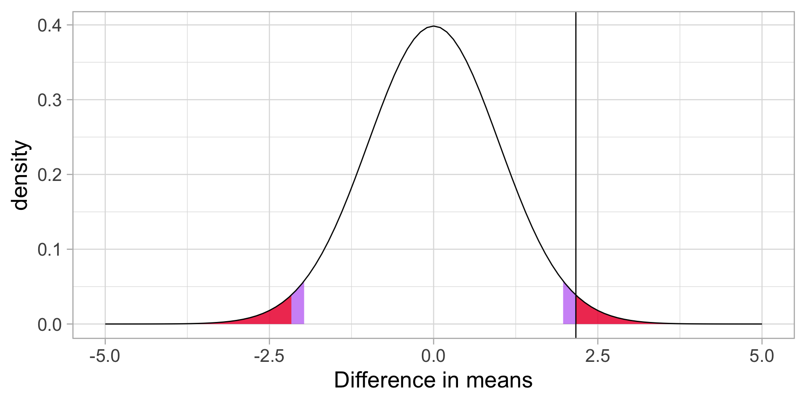

Independent-samples t-tests
Annoucements
- Quiz 9 is Thursday
- Homework 3 is on the website. Enjoy!
- Due next Wednesday (9 am)
- I may start grading homework 3 early.
Last time
- paired samples t-tests
Example
You have good reason to believe that dogs are smarter than cats. You design a study in which you recruit dogs and cats from households that have one of each and conduct a series of IQ tests to measure each animal’s intelligence on a scale from 1 (not so smart) to 5 (genius).
| Cat | Dog |
|---|---|
| 2 | 1 |
| 5 | 4 |
| 3 | 3 |
| 1 | 3 |
| 2 | 5 |
pets = data.frame(cat = c(2,5,3,1,2),
dog = c(1,4,3,3,5))
pets$difference = pets$cat-pets$dog
psych::describe(pets, fast = T) vars n mean sd min max range se
cat 1 5 2.6 1.52 1 5 4 0.68
dog 2 5 3.2 1.48 1 5 4 0.66
difference 3 5 -0.6 1.82 -3 1 4 0.81\[ \frac{\hat{\sigma}_\Delta}{\sqrt{N}} = \frac{1.82}{\sqrt{5}} = 0.81\]
\[ t = \frac{\bar{\Delta}}{\frac{\hat{\sigma}_\Delta}{\sqrt{N}}} = \frac{-0.60}{0.81} = -0.74\]
Code
stat = mean(pets$difference)/(sd(pets$difference)/sqrt(5))
df = 4
cv_t = qt(df = df, p = .975)
t_x = seq(-3.75, 3.75)
data.frame(t_x) %>%
ggplot(aes(x=t_x)) +
stat_function(fun = function(x) dt(x, df), geom = "line") +
stat_function(fun = function(x) dt(x, df), geom = "area",
xlim = c(cv_t, 3.75), fill = "purple") +
stat_function(fun = function(x) dt(x, df), geom = "area",
xlim = c(-3.75, -1*cv_t), fill = "purple") +
geom_vline(aes(xintercept = stat), color = "red", linetype = 2, size = 2)+
labs(title = "Sampling distribution \n(in t)", y = "density", x = "t")+
theme_pubr(base_size = 20)We can also calculate the area at least as far away from the null as our test statistic.
[1] 0.2505847[1] 0.5011694Using the t.test function:
Today
- Two independent means
Independent samples t-test
The independent samples t-test is appropriate when the means from two independent samples are compared.
\[H_0: \mu_1 = \mu_2\] \[H_1: \mu_1 \neq \mu_2\]
Test statistic is (roughly) defined by
\[t = \frac{\bar{X}_1 - \bar{X}_2}{SE}\]
The standard error of the mean difference can be estimated in two different ways. If the variances for the two groups are the same, then pooling them provides the most powerful solution, known as Student’s t-test.
Otherwise, a separate-variances estimate is used, resulting in Welch’s t-test.
More formally, the numerator of the t-statistic is the following:
\[t = \frac{(\bar{X}_1 - \bar{X}_2)-(\mu_1 - \mu_2)}{SE}\] In other words, is the difference between the sample means different from the hypothesized difference in the population means?
- \(\bar{X}_1 - \bar{X}_2\) = our observed difference in (independent) means
- \(\mu_1 - \mu_2\) = the (null) hypothesized difference in (independent) means
In this sense, the independent samples t-test is similar to a one-sample test of differences.
\[H_0: \mu_1 - \mu_2 = 0\]
\[H_1: \mu_1 - \mu_2 \neq 0\]
Calculating the demoninator of this test is not straightfoward. If we think of our test as a one-sample test of our difference score, then we need our standard error to be that of difference in means, not means themselves, just like in the paired samples t-test.
\(\text{SE (difference in means)} = \sigma_D\)
To take our standard error of the mean calculation and adjust it to reflect a difference in means, we make a small adjustment:
\[\sigma_D = \hat{\sigma}_p\sqrt{\frac{1}{N_1} + \frac{1}{N_2}}\]
A key assumption of the independent samples t-test is homogeneity of variance, meaning that even if these samples come from different populations, those populations differ only in terms of their mean, not in terms of their variance.
The benefit of making this assumption is that we can calculate a single estimate of variance and simply adjust the units (as in the previous slide).
If the variance in both samples is exactly the same, then we can plug \(\hat{\sigma}\) in for \(\sigma_p\) and be done.
Pooled variance
Rarely do we find that the variance estimates are exactly the same, in which case, we need to combine the two estimates to get a single variance number. This is called the pooled variance.
\[{\hat{\sigma^2_p} = \frac{(N_1-1)\hat{\sigma^2_1} + (N_2-1)\hat{\sigma^2_2}}{N_1+N_2-2}}\]
The bottom part, \(N_1+N_2-2\) is the degrees of freedom for an independent sample t-test. The total number of quantities ( \(N_1+N_2\) total scores) minus the number of constraints (2 means).
Each variance is weighted based on its sample’s contribution to degrees of freedom.
So our final calculation for the standard error of the difference of independent means is
\[\sigma_D = \sqrt{\frac{(N_1-1)\hat{\sigma^2_1} + (N_2-1)\hat{\sigma^2_2}}{N_1+N_2-2}} \sqrt{\frac{1}{N_1} + \frac{1}{N_2}}\]
Recap
The first part of this equation pools the two variance estimates by weighting each one based on sample size.
The second part changes the units from scores to differences in means. * Recall that in hypothesis testing, we’re not interested in the likelihood of scores, but the likelihood of statistics.
At this point, the procedure of hypothesis testing goes back to normal.We have our sampling distribution under the null hypothesis, which is a t distribution defined by
\[\mu = 0 \\\]
\[\sigma_D = \sqrt{\frac{(N_1-1)\hat{\sigma^2_1} + (N_2-1)\hat{\sigma^2_2}}{N_1+N_2-2}} \sqrt{\frac{1}{N_1} + \frac{1}{N_2}}\]
\[df = N_1 + N_2 - 2\]
In this case, we’re using \(\sigma_D\) the same way we use \(\sigma_M\), we just change the notation to reflect our interest in a difference in means, rather than the mean itself.
We calculate our test statistic
\[t = \frac{\bar{X}_1-\bar{X}_2}{\sigma_D}\]
and then find the probability of this test statistic or more extreme under the null.
Example
We turn again to the Census at School data. One question that students were asked was to report how many hours per week they spent time with friends. We might be interested to know whether adolescent girls spend more time with friends than adolescent boys.
Maybe I’ll exclude participants who report impossible numbers.
school_new = filter(school, friends < 168)
psych::describeBy(school_new$friends, group = school_new$Gender)
Descriptive statistics by group
group: Female
vars n mean sd median trimmed mad min max range skew kurtosis se
X1 1 122 18.31 21.44 10 14.19 10.38 0.3 124 123.7 2.14 5.45 1.94
------------------------------------------------------------
group: Male
vars n mean sd median trimmed mad min max range skew kurtosis se
X1 1 83 12.34 15.91 7 8.87 7.41 0 80 80 2.46 6.32 1.75\[\bar{X}_1 = 18.31 \]
\[\hat{\sigma}_1 = 21.44 \]
\[N_1 = 122 \]
\[\bar{X}_2 = 12.34 \]
\[\hat{\sigma}_2 = 15.91 \]
\[N_2 = 83 \]
Next we build the sampling distribution under the null hypotheses.
\[\mu = 0\]
\[\sigma_D = \sqrt{\frac{(122-1){21.44}^2 + (83-1){15.91}^2}{122+83-2}} \sqrt{\frac{1}{122} + \frac{1}{83}}\]
\[= 19.39\sqrt{\frac{1}{122} + \frac{1}{83}} = 2.76 \]
\[df = 203\]
Code
x = c(-5:5)
data.frame(x) %>%
ggplot(aes(x=x)) +
stat_function(fun= function(x) dt(x, df = df), geom = "area",
xlim = c(cv, 5), fill = "purple") +
stat_function(fun= function(x) dt(x, df = df), geom = "area",
xlim = c(-5, cv*-1), fill = "purple") +
stat_function(fun= function(x) dt(x, df = df), geom = "line") +
labs(x = "Difference in means", y = "density") +
theme_light(base_size = 20)We calculate our test statistic and compare that to our critical value.
Code
data.frame(x) %>%
ggplot(aes(x=x)) +
stat_function(fun= function(x) dt(x, df = df), geom = "area",
xlim = c(cv, 5), fill = "purple") +
stat_function(fun= function(x) dt(x, df = df), geom = "area",
xlim = c(-5, cv*-1), fill = "purple") +
stat_function(fun= function(x) dt(x, df = df), geom = "line") +
geom_vline(aes(xintercept = t), color = "black")+
labs(x = "Difference in means", y = "density") +
theme_light(base_size = 20)
We can also calculate the probability of this test statistic or more extreme under the null.
Code
data.frame(x) %>%
ggplot(aes(x=x)) +
stat_function(fun= function(x) dt(x, df = df), geom = "area",
xlim = c(cv, 5), fill = "purple",alpha = .5) +
stat_function(fun= function(x) dt(x, df = df), geom = "area",
xlim = c(-5, cv*-1), fill = "purple",alpha = .5) +
stat_function(fun= function(x) dt(x, df = df), geom = "area",
xlim = c(t, 5), fill = "red",alpha = .7) +
stat_function(fun= function(x) dt(x, df = df), geom = "area",
xlim = c(-5, t*-1), fill = "red",alpha = .7) +
stat_function(fun= function(x) dt(x, df = df), geom = "line") +
geom_vline(aes(xintercept = t), color = "black")+
labs(x = "Difference in means", y = "density") +
theme_light(base_size = 20)
Alternatively, we can skip calculating statistics by hand, and use an R function.
Two Sample t-test
data: friends by Gender
t = 2.1659, df = 203, p-value = 0.03148
alternative hypothesis: true difference in means between group Female and group Male is not equal to 0
95 percent confidence interval:
0.5358328 11.4173373
sample estimates:
mean in group Female mean in group Male
18.31393 12.33735 Confidence intervals
Confidence intervals are used to communicate the precision in our how well our statistic estimates the parameter. As a reminder, they are grounded in frequenst probability: if we repeated our experiment many times, we would expect that 95% of the time, our 95% confidence interval would capture the true population parameter.
In an independent sample’s t-test, you have calculated three different statistics, and so you can construct three different confidence intervals.
CI around the difference in means
The most interpretable statistic is the difference in means – this is the statistic you are testing using NHST.
\[CI_{\text{Difference}} = (\bar{X}_1 - \bar{X}_2) \pm \sigma_D(CV)\]
Confidence intervals around estimates of the mean
In addition to calculating precision of the estimate in difference in means, you may also want to calculate the precision of the mean estimates themselves.
In this case, you should use the standard deviation of the group sample as your estimate of population sd, instead of merging them.
\[CI_{\text{Mean}} = {X} \pm \sigma_M(CV)\]
\[= {X} \pm \frac{\hat{\sigma}}{\sqrt{N}}(CV)\]
\[= {X} \pm \frac{\hat{\sigma}}{\sqrt{N}}(CV)\]
Females
[1] 21.43591[1] 1.979764\[18.31 \pm \frac{21.44}{\sqrt{122}}(1.98)\] \[[14.47, 22.15]\]


Plots of confidence intervals can contain information on statistical significance, although, as with everything grounded in frequentist probability, there are strict limits to what you can and cannot conclude.
For example, if a 95% confidence interval contains a value X, then the statistic the confidence interval describs is not statistically significantly different from X.

Similarly, when comparing two means, if the confidence interval one of mean contains the second mean, the two means are not statistically significantly different.
If the confidence intervals around those means do not overlap, then the two means are significantly different.
But, if the confidence intervals do overlap but do not contain the other means, the significance of the comparison test is indeterminate.
Lastly, it’s important to note that a difference in significance is not the same as a significant difference. This can seem obvious in a two-groups t-test, but it will come up in sneaky ways in the future.
What is a test statistic?
\[Z = \frac{\bar{X}-\mu}{\sigma_M}\]
\[t = \frac{\bar{X}-\mu}{\frac{s}{\sqrt{N}}}\]
\[\chi^2 = \sum{\frac{(O_i-E_i)^2}{E_i}}\]
\[t = \frac{(\bar{X}_1 - \bar{X}_2)-(\mu_1 - \mu_2)}{\sqrt{\frac{(N_1-1)\hat{\sigma^2_1} + (N_2-1)\hat{\sigma^2_2}}{N_1+N_2-2}} \sqrt{\frac{1}{N_1} + \frac{1}{N_2}}}\]
\[t = \frac{\bar{\Delta}-\mu_0}{\sqrt{\frac{\hat{\sigma_{\Delta}}}{N}}}\]
All test statistics measure
\[\frac{\text{Signal}}{\text{Noise}}\]
Next time
- Assumptions
- Effect sizes